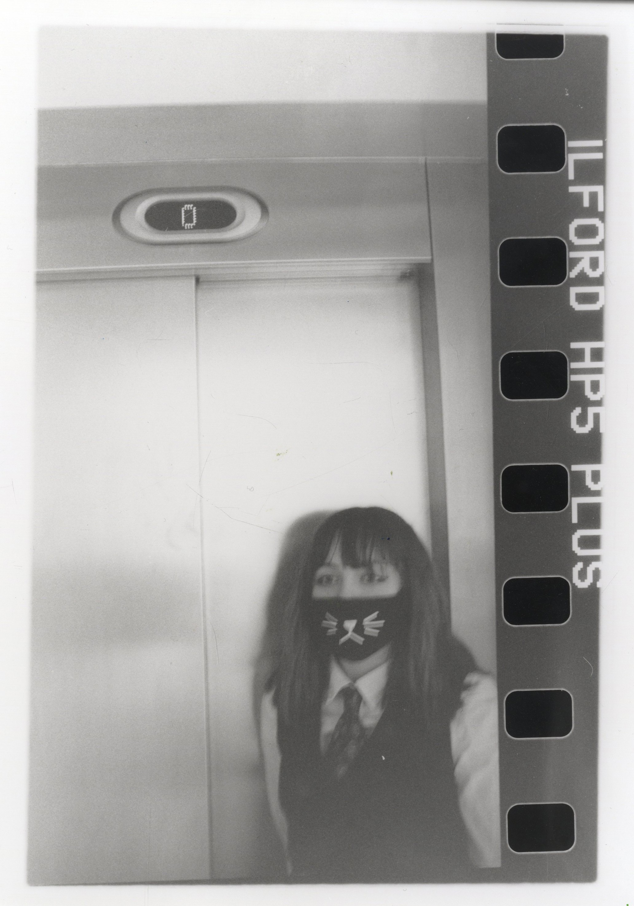

///
A.Ruth is a multi-media surrealist artist whose practice explores the unconscious mind, dreams, and symbolism within the digital-human condition. Her work looks at the relationship between human and machine, shaped by the continual exposure to online media and a growing awareness of an unpredictable, technology-driven future. Combining old and new tech, A.Ruth creates interactive, cybernetic installations that respond to body movement and brain activity. Where shared experiences by human beings are d̵i̷g̶i̵t̶a̶l̶i̵s̸e̷d̵ , organised data m̵o̷r̸p̵h̶s̴ ̴ into physical crafts, turning the gallery and those who interact with her works into voluntary social sculptures. Through this process, physical outputs b̷l̴u̷r̶ ̸ the boundary between organic and ar͘͟ti͙̾f̠i͜c͓̺i̛à̺l.̌ As a result her work responds to a growing dḛ͘senś̥i̘̚tͯ͆is̺ãtioň̏ w͈̮ĩ̿̄t͐h͇ͅi͑ͪn̈ d̸͎ì͊g̓i̵͓ͯt̯̾̀al̟̓̔ c̹ul̚̕t͎̲̹u͇͛ȓͅe, questioning whether the translation of h̻um̴̳ͬa͉̭nͯͭ experience into data risks reducing emotion to something m̝͕̜ȩ̛̥̌̓̀c_h̓_͍̪ȃ̢̫̭n̳͑̐̋͛i̳c̗̟̿̏a̙l̲.͈ͫ͞ . Ĩ̇n͇ t̷ͯh͆̕i̇ͤ́s̏̍͢ s̗p̣̆ac̳̯e,̽̃ t͓͖̄h̻̣eͬ͊ h͋̎̿umͮa̪͈n í̜ͧs no̜͐͟ l͈̅onͬge͇ͬr̲̉͠ s̸̬̽ep̵̲ͬa̢r̴͟͜ă̻͡tͦe͖ f̧̔̀r̵ͮ̉o͒m̹͚ͨ t͙̦ͤh̳̃eͫ͟ sys̾͢t͗em̓̚, b̫̭ͫuť̸ͦ ra̻̩̿tḩ̯e̸rͨ̒ en̯̔t̻ͨ̓a̬n̛g̳̓lͨ̒ẽ͇d wͧ͊i͌͜tͦ̌͜hi̺̕n̝ it̺.ͤ.

Education
Alevels in Psychology, Fine art and Photography at Pershore High school Sixthform 2020-2022
BA Fine Art with a Level 5 Diploma in Creative Computing at Norwich University of the Arts, 2022–2026.
Gallery Exhibtions
BA Interim show 2026, at The Undercroft Gallery: a community gallery space in the heart of the city of Norwich. I had the opportunity to showcase one of my works among my peers. This was an exciting opportunity to present my practice to the public and gain useful insight and experience for installing artwork.
2026 Upcoming involvement at The Free Range Gallery: A graduate show at the Truman Brewery in London where I will have the chance to install my own artwork. At this opportunity i will be collabourating with other fellow graduates, discussing and helping with technical details of installation and curation.
Collaborations
Études (2026): A musical performace piece with Ben McDonnell (a visual artist, researcher and composer).
Chaos Collective (2026): An ongoing collaboration with MA Fine Art Graduates at Norwich University of the Arts
.JPG)
Contact me for commissions
Email: Liddingtonamy5@gmail.com
Instagram: @amu_x_art | @amu_x_photography
LinkedIn: linkedin.com/in/Amy-liddington